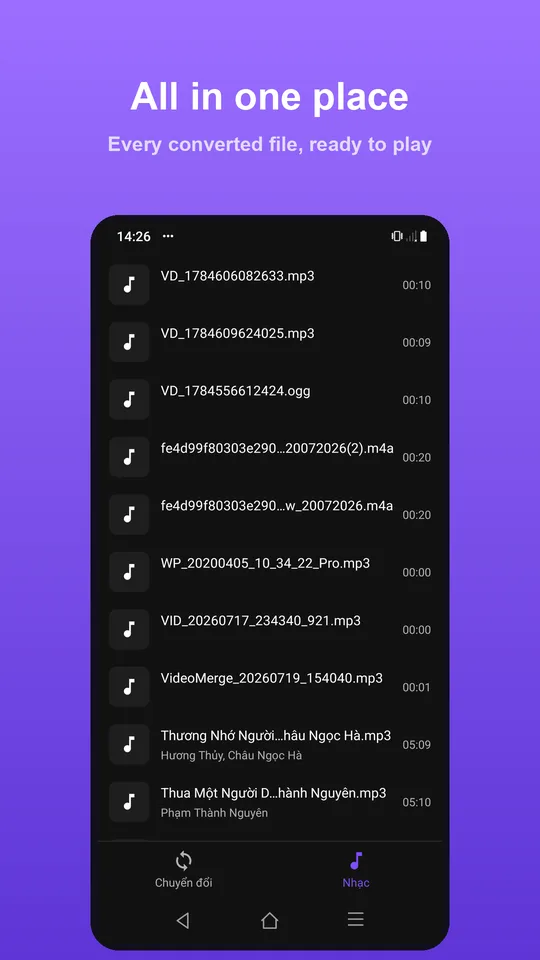

Chia sẻ âm thanh vừa tách từ video trên Android
Gửi riêng âm thanh tiện khi người nhận chỉ cần nghe nội dung. Sau khi tách xong, bạn có thể mở bảng chia sẻ Android từ kết quả hoặc thư viện. Việc nghe kiểm tra trước khi gửi giúp tránh gửi nhầm đoạn, nhầm phiên bản hoặc một tệp không có tiếng.
Bạn sẽ làm được gì?
Phát kiểm tra và chia sẻ tệp audio vừa xuất từ Video to Audio bằng bảng chia sẻ Android, kèm mẹo chọn đúng bản và dung lượng.
Các bước thực hiện
- Mở bản âm thanh vừa xuất và nghe đầu, giữa, cuối đoạn để kiểm tra nội dung.
- Đối chiếu tên và thời lượng với đoạn bạn định gửi.
- Chọn Chia sẻ, sau đó chọn ứng dụng nhận trong bảng chia sẻ Android.
- Kiểm tra tên tệp hoặc thẻ đính kèm ở ứng dụng đích trước khi tự bấm gửi.


Nếu ứng dụng nhận từ chối file
Mỗi ứng dụng có thể đặt giới hạn riêng về dung lượng và định dạng. Khi file quá lớn, thử cắt bớt phần không cần hoặc xuất một bản bitrate thấp hơn. Đổi đuôi tên file không làm giảm kích thước và cũng không thực sự chuyển định dạng.
Câu hỏi thường gặp
Chạm Chia sẻ có gửi ngay cho người khác không?
Thông thường thao tác này mở ứng dụng đích hoặc trình chọn người nhận. Hãy kiểm tra màn hình tiếp theo để biết lúc nào việc gửi thực sự diễn ra.
Trước khi bắt đầu
Các lựa chọn nâng cao, chất lượng xuất hoặc số tệp trong một lần có thể dùng credit hoặc Premium. Kiểm tra thông tin ngay trên màn thao tác trước khi chạy; ảnh giao diện có thể khác nhẹ theo phiên bản và ngôn ngữ.
Việc xử lý media diễn ra trên thiết bị. Các dịch vụ như quảng cáo và mua hàng có thể dùng mạng; xem chính sách quyền riêng tư để biết thêm.
Tải app Video to Audio